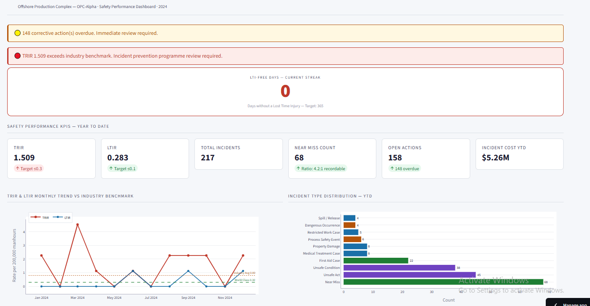

Industrial Data Scientist · Predictive Maintenance · Reliability Analytics · HSE Intelligence · Oil & Gas
📍 Lagos, Nigeria · Open to remote and international engagements
⚙️ View ORPMI Demo GitHub LinkedInI come from industrial operations — Oil & Gas, HSE, Industrial Chemistry — and have fully transitioned into applied data science. That means I can build the model and understand what the output means on the plant floor.
As an industrial data scientist based in Lagos, Nigeria, I specialise in predictive maintenance for Oil & Gas Python analytics, reliability analytics engineering, and HSE analytics platforms for the energy sector.
Most data scientists need a reliability engineer to explain what MTBF means or why vibration slope matters more than amplitude. I already know. That is the difference.
I build production-grade analytics platforms aligned to ISO 14224 data science standards, API RP 754, and ISO 45001 — deployed on Docker and Streamlit Cloud, with TRIR LTIR analytics dashboards and automated test suites.

ORPMI Platform — Asset Health Monitor · 6 production assets · ISO 14224 aligned · Streamlit · Python
Three production-grade platforms on one offshore facility covering equipment reliability, HSE incident analytics, and safety culture prediction.
Every platform is built to international Oil & Gas and safety standards — not generic analytics tools.
Industrial Data Scientist working at the intersection of Oil & Gas operations and applied data science. Open to conversations about industrial analytics, digital reliability, and where the space is heading.